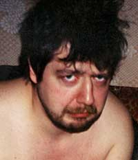

Уважаемые друзья!
Заметили, как я весь исстрадался?
Впрочем, не важно. Главное, что в течении трёх недель, воспоследовавших воспослед за отставкой, я предавался всяческим осознаниям. Порыв был интуитивным, спорадическим, ну и, в общем, стихийным. Но затем в осознанный перерос. Я ж люблю такие дела. Сунуть пальцы в дверную щель и смотреть, а что будет дальше? Всегда ведь интересно, признайтесь.
Некоторые друзья, которые неуважаемые, пожали плечами. Это было нехорошо с их стороны. Некоторые, напротив, написали письма и позвонили звонки: «Да ты ебанулся! Это когда кони — дышат, а когда Обсёрверцы — не сдаются!» Но я уже закусил удила. И не просто так, а в силу множественных колотых обстоятельств.
Во-первых, как-то всё неясно с журналом нашим, хоть это, конечно, профессиональная тайна и корпоративный секрет. То ли выходит он, то ли уже не выходит. Деньги вроде пока платят, но как-то неубедительно отягощают карман они, не будучи подкреплены реальной работой.
А главное западло — многие чуваки (и чувихи — зачем стесняться этого строгово, красивого слова?) написали статьи, сфотографировали фотографии, нарисовали рисунки… И, натурально, ждут, когда их отяготят тоже. А коммерческий директор сказал: «Пока следующий номер в типографию не сдадим, ни копейки не дам, хоть режьте!..»
Его зарежешь, ага.
Это вот поэтому у меня сложилась депрессия. Я ж братьёв кидать не люблю, а извиняться и успокаивать — ещё больше. Ну их тогда вообще нахуй.
Теперь, значит, второй вопрос. В газете нашей тоже снеслись какие-то перемены. Если раньше мы занимали строго третье место с конца по зарплате (когда люди начинали вонять, им в пример ставили ещё меньше башляющих Мос-новости и Независьку, а больше никого, так что посчитать было нетрудно), то теперь занимаем уже второе с половиной: фонд зарплаты сократили на сорок персентов.
В совокупности с делириумом, который вот уже лет пять творится у нас вместо дискурса (и собирается, и продолжает) это привело к тому, что мама моя крёстная А. Н. Л-на гневно отринула от себя должность редактора. Я теперь сирота. Хоть на место А. Н., вероятно, придёт друг товарищь и друг Б. Паша, все равно как-то стрёмно.
То есть, не по себе (я всегда в неосновном значении сему «стрём» употребляю, ну да не важно).
Паша Б., во-первых, не хочет. Во-вторых, он старый конь, который, известно, только елозит по борозде вместо того чтоб, значит, поглубже. И если бы у меня прямо спросили, кого бы я ваще хотел на месте редактора, то, вы начнёте смеяться, я бы сказал: «А вот Кузьминского Б. Н. бы хотел бы!»
Но никто не спросит, не бойтесь. И потом, внешнего приглашать — зарплатой надо делиться. А так, баба вон — общак тяжелеет.
Пишу об этой фигне, чтобы несерьёзным (даже скажу прямо — наглым и тупым) хамам из РЖ стало стыдно за те легковесные скороспелы, которыми они отстрелялись по Вечности касаемо заслуженной и, как не перди, великой Литературки.
А на самом деле всё оно вон как.
В смысле, гораздо хуже.
И даже еще хуже.
Потому что я ведь ещё не все выложил.
Потому как — педагогика. Нельзя всему что знаешь завистников и конкурентов учить.
Вот.
Ну ладно.
Вернемся теперь к событиям, что так потрясли, сиречь к отставке. Я ведь, знаете, вот как-то так осознал ведь её. «Северный дятел» был продуктом двухтысячного года, то есть эпохи, когда органическая низовая культура (готикой ради смеха называем её) встала на смертный бой с техногенными (либеральными бишь) тенденциями, к каковым относятся Марина Литвинович, Сергей Болмат, издательство Захаров и прочий кал.
Борьба потому была так скоротечна, что готы проигрывают (как и побеждают) стремительно и бесповоротно. А не потому что, как вы скажете (как Маша скажет), «автор переместился из напитанной всяческими органиками деревни за жестко-кристаллическую решётку города и, сидючи за этой решёткой, променял мать-отца на стабильно приближающийся к астрономическому цинизм.
Отнюдь хуй. (Последнее слово, я извиняюсь, вписано для пуриста и букволиста Лейбова.) Вы же знаете, как быстро и аргументировано я отмету подобные безосновательные догадки! Так что не надо. Все было, как я сказал. Органическая культура в очередной раз просрала неорганической, и нами теперь правят силиконовые монстры. Желающие могут отступить в леса. А мне жена велела купить квартиру.
Исходя из вышеобнаруженного, эта рубрика теперь называется не »Северный Дятел", а «Вялые варианты». Других изменений не будет, ибо я нам не Ленин, чтобы меняться. Гав-гав. Дальше.
Недавно в процессе дисциплинарной пьянки в Ad Marginem видел кумира своих двадцати шести лет Вову Сорокина. Вова, как и следовало ожидать, оказался форменным пидарасом. Потопырил губу, попружил хвост и нелюдимо съебался в кафе «Рюмка». Саша Иванов, сохраняя лицо, пламенно пожал пацанам конечности и побежал за Вовой решать вопросы. Остались мы с Котоминым практически как хуй знает кто одни, ну и нажрались до полусмерти.
Называется, прикоснулся к прекрасному.
И почему, спрашивается, великие и просто крупные ростом люди всегда так плохо себя ведут? Ну издатели, критики, журналисты — ещё понятно. Их вечно просят о чём-нибудь. Но писатели-то?
Думается, от комплексов.
Поэтому я рад, что у меня комплексов нет, а есть один только врождённый идиотизм. Но работая над этой проблемой, решил подставиться по полной программе. Сижу, собираю «сборничек прозы». Будет называться то ли «White Mare’ Nightmare», то ли «Trash Can». А может, бог милует — будет просто «Сборничек прозы» называться.
Сижу практически с шести до двадцати одного утра, так захватывает! Матюк туда, матюк сюда, редактура… Издателя покамест не выбрал.
Из читательских впечатлений. В последние десять дней радовали такие места. Во-первых, рассказ Димы про то, как наши мстят буржуям за Эдьку. Конкретно оформился наш Чувмил. Надо только из Летынстетута забрать его, а то оглоушат, заломают и выбросят.
Опять же, на фиг ему этот умственно отсталый Летынстетут, если он уже и так правое полушарие аж самого Курицына? Жаль только, что предполагаемый формат «Озона» таки не предполагает саморазрастания в литературный портал с последующей раздачей сладких конфет и славы. Я-то думал (особенно после низвержения «Круга»), что да. Но увы, озоновские папики более практичные люди.
Во вторых, замечательно наблюдать, как поднялся в связи правильным позиционированием идиоформата Куталов. (Постолль, как у нас говорят.) Сейчас по моим объективным наблюдениям это самый продвинутый, эффективный и актуальный чувак на Ливжурнале.
Хотя многие пытаются затеоретизировать этот модный прикол (Линор что-то писала, С. Кузнецов что-то писал), на самом деле — дерьмо. Обычные стадномассовые инстинкты. Но Куталов после непродолжительных поисков смысла своего там существования похоже таки нашёл. Начиная от картинки и заканчивая дыханием. Фальшивые потуги Лейбова и снулые инвективы Вербицкого выглядят на фоне куталовских a la French theories ретро-страниц так, будто чуваки, во-первых, первый день из оффлайна, а во-вторых не знают, как пишется слово «борьщь».
Подобного резонанса текста с автором, образующего логически и медицински нерасчленимый гештальт, я не помню со времён Яцуткиной «Точки», хотя это было уже давно и неправда. Со времён Славиных «Записок литературного человека» в Октябре не помню, которых, надо полагать, вообще не было.
Или со времён партизанщины на руссре, от которой до сих не могу очухаться и просраться. Из актуального можно сравнить только с передовыми Проханыча в газете «Завтра», которые, что там и говорить, являются главным достижением русской либеральной журналистики ХХ века.
Надеюсь, последняя мысль достаточна очевидна или хотя бы понятна, чтобы без комментариев, а то мне уже пора идти в магазин за кефиром.
Спасибо, друзья, что заглянули на новоселье.
Всегда к вашим услугам (если обматерить надо кого),
до новых встречь в Сдувшихъся вариантах!